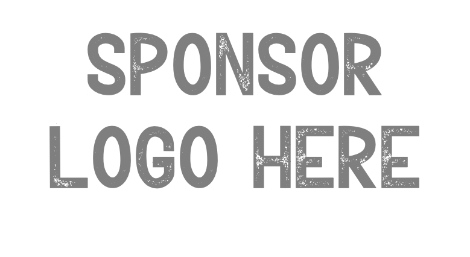

Human Motion Challenges in Real-World and Clinical Settings
+ Benchmark and Challenge on Parkinsonian Gait
A focused forum on human motion understanding under realistic constraints, bridging computer vision, biomechanics, digital health, and clinically grounded evaluation.
About
Human motion understanding is central to computer vision, yet many models still degrade when motions diverge from the curated distributions seen in standard benchmarks. These gaps become even more pronounced in real-world settings, particularly in clinical contexts where subtle movement deviations can carry meaningful diagnostic value, but also extend to broader challenges such as realistic animation generation, coherent in-scene navigation, and physically plausible human–object interactions.
This workshop creates a meeting point for the broader community working on human-centric vision, long-term motion understanding, robust evaluation, and clinically grounded modeling, as well as those interested in applying human motion in any real-world application. The goal is to push the field beyond controlled benchmarks toward methods that remain reliable under real-world constraints.
Topics include:
- 3D pose and mesh reconstruction in unconstrained environments
- Long-term and longitudinal human motion understanding
- Efficient parametric human representations
- Motion representation learning and generative modeling
- Privacy-preserving human motion modeling in real-world contexts
- Learning under domain shift and cross-site generalization
- Fairness, reproducibility, generalization, and bias in human motion models
- Benchmark design for real-world human motion understanding
- Gait analysis and kinematic modeling
- Musculoskeletal and muscle-actuated humanoid modeling
Benchmark & Challenge
The workshop is paired with a benchmark and challenge on Parkinsonian gait built on CARE-PD, a large harmonized dataset of anonymized SMPL mesh gait sequences aggregated across nine cohorts and clinical centers.
The proposed challenge uses CARE-PD as training data and evaluates performance on harmonized test sequences from three additional unseen sites. This setup is designed to reward methods that remain robust to real-world distribution shift and clinically realistic variability.
Challenge important dates:
- Start of the public benchmark: TBD
- Close of the public benchmark: TBD
(The benchmark will continue to be available for evaluation after this date, but the results will not be considered for the workshop.)
Invited Speakers
Call for Papers
We invite submissions on human motion understanding under realistic and clinically grounded conditions, spanning computer vision, biomechanics, digital health, and robust evaluation. The workshop welcomes work on both methodological advances and deployment-aware analysis.
Submissions aligned with the workshop theme will be peer reviewed by a program committee composed of the organizers and researchers with expertise in human-centric vision. A best paper will be selected and highlighted during the workshop.
Relevant topics include 3D pose and mesh reconstruction in the wild, motion representation learning, domain shift and cross-site generalization, gait analysis, motion biomarkers, fairness and bias in motion models, benchmark design, and privacy-preserving human representations for healthcare settings.
Important dates
- Submission deadline: [TBD]
- Notification date: [TBD]
- Camera-ready deadline: [TBD]
Schedule
Organizers
Vida Adeli
University of Toronto
Kimia Shaban
University of Toronto
Babak Taati
University of Toronto
Ehsan Adeli
Stanford University
Hamid Rezatofighi
Monash University
Georgios Pavlakos
UT Austin
Eni Halilaj
Carnegie Mellon University

Hyewon Seo
Université de Strasbourg
Andrea Iaboni
University of Toronto
Martin McKeown
University of British Columbia
Maryam Mirian
University of British Columbia
Program Committee
- TBD
- TBD
- TBD
Relevant Previous Workshops
- TBD
- TBD
- TBD

Replace this block with the final contact email, submission link, and sponsor details when they are ready.